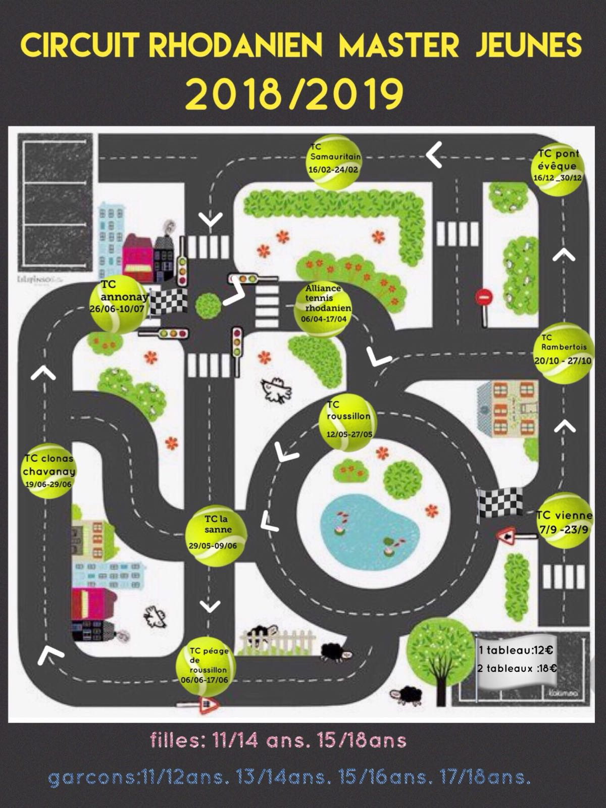

Le circuit Rhodanien Master Jeunes est un circuit de tennis réparti sur 10 clubs sur l'ensemble d'une saison sportive. Les
joueuses et joueurs sont répartis par catégorie d'âge :
- Pour les filles :
- Pour les garçons :
- 11/12 ans
- 13/14 ans
- 15/16 ans
- 17/18 ans
Pour plus d'informations sur le déroulé du master, vous pouvez consulter le réglement
ici.
